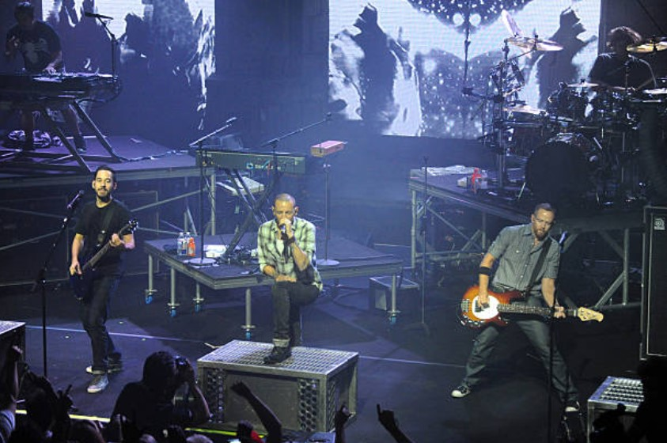
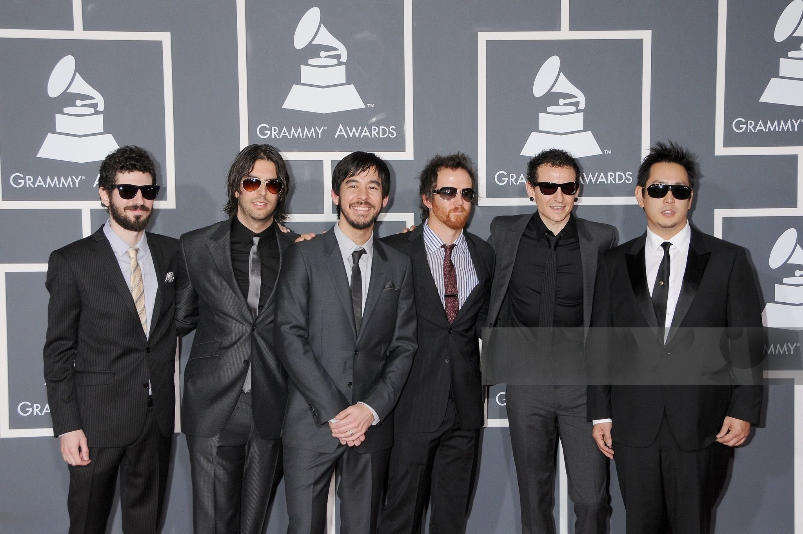
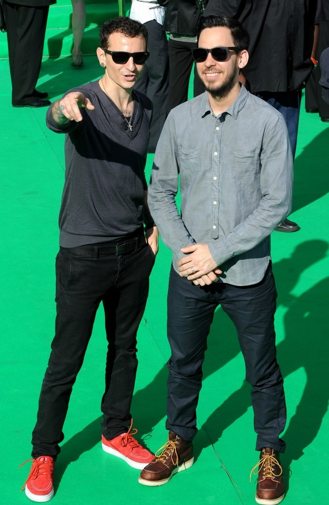

A Thousand Suns é o quarto álbum de estúdio do Linkin Park, lançado em 8 de setembro de 2010, pela Warner
Bros. Records. O disco se afasta drasticamente dos trabalhos anteriores da banda, focando mais em música
eletrônica, rock alternativa e rap rock. É um álbum conceitual que aborda medos humanos, principalmente a
guerra nuclear. Pela segunda vez foi produzido por Mike Shinoda e Rick Rubin, que já tinham trabalhado no
último álbum, Minutes to Midnight. Teve 4 singles, The Catalyst, Waiting for the End, Burning in the Skies e
Iridescent. Estreou em 1° lugar na Billboard 200 e vendeu mais de 2 milhões de cópias pelo mundo inteiro.
Linkin Park em 2010 durante o A Thousand Suns World Tour performando
Waiting for the End, Madrid
O processo para se passar uma mensagem
A produção do A Thousand Suns ficou por parte de Rick Rubin e Mike Shinoda, assim como no Minutes to
Midnight. Enquanto a composição se iniciou ainda na turnê europeia do Minutes to Midnight. A banda utilizou
um novo estilo de gravação nesse álbum, em vez de gravar um álbum, fazer turnês e então escrever outro
álbum, eles estavam sempre escrevendo. A produção primária e a gravação do álbum ocorreram no NRG Studios em
Los Angeles, Califórnia. Ao longo do processo de gravação Chester estava ocupado com seu projeto paralelo,
Dead By Sunrise, gravando e fazendo turnês do álbum Out of Ashes. As sessões finais do A Thousand Suns foram
extremamente cansativas para o grupo, perto do prazo final eles tiveram problemas como escolha de single,
gráfico e arte do álbum. Em 2020, durante uma transmissão na Twitch, Mike disse: "As sessões do ATS ficaram
estressantes no final porque estávamos tentando finalizar o disco e tínhamos nos comprometido com um prazo e
então o prazo estava começando a se aproximar e então percebemos, era como, "Oh, temos um prazo de verdade."
E esse é realmente o único motivo. Estávamos apenas tentando nos manter no caminho certo para fazer, tipo,
as coisas que dissemos que faríamos e terminar o disco. Não foi estressante como Hybrid Theory foi
estressante ou como Minutes To Midnight foi estressante. Hybrid Theory foi estressante porque o cara da
gravadora estava sendo horrível e tentando mudar tudo. As sessões do Minutes To Midnight estavam ficando
estressantes porque parecia que nunca lançaríamos um disco, era como andar em círculos repetidamente e fazer
mais demos e mais demos."
A banda mergulhou em discussões sobre política, guerra, medo e humanidade, inspirando-se em discursos
históricos, como os de Robert Oppenheimer, Mario Savio e Martin Luther King Jr., que foram sampleados nas
faixas The Radiance, Wretches and Kings e Wisdom, Justice, and Love, respectivamente. O grupo utilizou Gang
Vocal em faixas como Iridescent e The Catalyst, tambores tribais e megafones em When They Come for Me e usou
sintetizadores em Waiting for the End. O resultado foi um álbum que gira em torno da autodestruição humana e
da busca por redenção em meio ao caos, que foi amplamente divulgado como uma obra musical que os fãs
deveriam ouvir do início ao fim.

Linkin Park em Los Angeles, durante o A Thousand Suns World Tour,
2011
A arte da guerra
Como de costume, Frank Maddocks, Mike Shinoda e Joe Hahn foram as grandes influências na arte do A Thousand
Suns. A capa e as ilustrações visuais do álbum foram feitos por Josh Vanover. A capa não possui um
significado especifíco, mas pode simbolizar uma explosão nuclear estilizada, rementendo diretamente ao tema
de guerra nuclear do disco
O título do álbum vem do texto Bhagvad Gita do Hindu Sanskrit: "se a radiação de mil sóis estourasse pelos
céus, seria como o esplendor do todo-poderoso.", uma famosa citação de J. Robert Oppenheimer se referindo a
bomba atômica.

Linkin Park no Grammy Awards, 2010
Awards
Importante, impactante e inesquecível
A Thousand Suns foi uma aposta ousada do Linkin Park, mas teve uma recepção relativamente boa. Jody Rosen da
Rolling Stone deu ao álbum três de cinco estrelas, dizendo que soa como um "um tributo ao Linkin Park
matador". Dave de Sylvia da Sputnikmusic, por sua vez, disse que o disco "um álbum de rock bem feito", e
falou que era inclusive melhor que seu predecessor, Minutes to Midnight, mas não tem a mesma vida e animação
do álbum de estreia, Hybrid Theory. Enquanto James Montgomery da MTV elogiou o disco por sua " mudança
alastranda, contraditória e ambiciosa" e comparou com o álbum Kid A do Radiohead, mas falou que soava mais
otimista.
Foi o terceiro álbum de estúdio do Linkin Park que estreou em 1° lugar na Billboard 200, vendeu mais de 240
mil cópias em sua primeira semana nos Estados Unidos e mais de 523 mil no mundo inteiro. Em 2012 já tinha
vendido mais de 845 mil cópias, sendo certificado como disco de ouro pela RIAA. Apesar de ter um sucesso
consideravelmente menor aos álbuns anteriores, cumpriu a função de espalhar uma mensagem e causar impacto. A
faixa Iridescent também apareceu no filme “Transformers: O Lado Oculto da Lua”.

Linkin Park na estreia de Transformers: O Lado Oculto da Lua, que
contém a faixa Iridescent, 2011
Mil sóis no palco
Para A Thousand Suns, um álbum conceitual e experimental com forte temática política, tecnológica e
humanitária, se destacou a seguinte turnê:
- A Thousand Suns World Tour, principal turnê para promover o álbum A Thousand Suns. Iniciou-se em outubro
de 2010 na Europa, passando por países como Alemanha, França, Reino Unido, Espanha e Itália. Em 2011, seguiu
para a América do Norte, Ásia, Oceania e América do Sul. A turnê marcou uma nova abordagem nos shows da
banda, com cenários futuristas, telões de LED, projeções sincronizadas e interlúdios ao vivo extraídos
diretamente do álbum, como The Requiem e Wisdom, Justice and Love. O setlist dava destaque às novas faixas,
mas também incluía sucessos de discos anteriores, criando uma experiência imersiva e cinematográfica para o
público. A turnê foi considerada uma das mais ousadas da carreira do Linkin Park em termos de proposta
artística e produção visual.
Linkin Park em 2010 durante o A Thousand Suns World Tour performando The
Catalyst, Londres